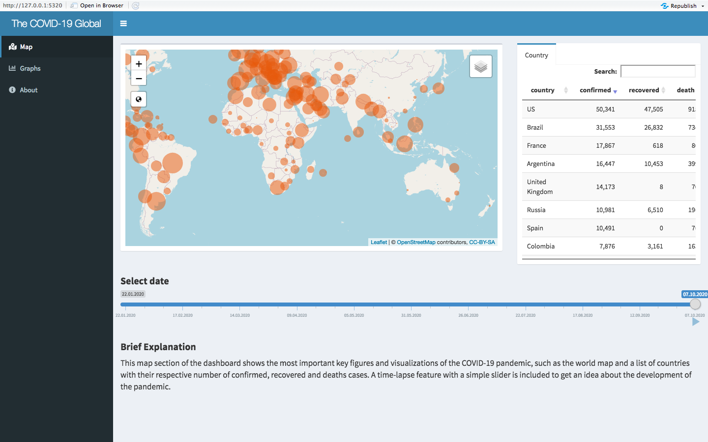

COVID-19 Shiny Dashboard in the World
Yawen Zhang
2020-10-23
COVID19_Shiny.RmdIntroduction
The {COVIDworld} package provides datasets and functions to run Shiny dashboard which aim to help users to get a deeper understanding of the 2019 Novel Coronavirus COVID-19 (2019-nCoV) epidemic in the world.
Library {COVIDworld} in you working directory.
The package and part of the data will show as follow:
#> date province country lat long type cases
#> 1 2020-01-22 Afghanistan 33.93911 67.70995 confirmed 0
#> 2 2020-01-23 Afghanistan 33.93911 67.70995 confirmed 0
#> 3 2020-01-24 Afghanistan 33.93911 67.70995 confirmed 0
#> 4 2020-01-25 Afghanistan 33.93911 67.70995 confirmed 0
#> 5 2020-01-26 Afghanistan 33.93911 67.70995 confirmed 0
#> 6 2020-01-27 Afghanistan 33.93911 67.70995 confirmed 0How to launch my shiny dashboard?
The applicaiton can be launched by using the following line of code:
launch_app()This app aims to track and visualize the spread by providing several interactive plots and tables, including the timeline function and the ability to overlay past outbreaks.
Data Sources
The raw input data are retrieved from a package called coronavirus. This package retrieved from the github repository called Rami Krispin. The raw data is provided by Johns Hopkins University Center for Systems Science and Engineering (JHU CSSE) who share their data on a public github page Johns Hopkins University GitHub.
How to use this shiny dashboard?
This shiny web application aims to help users to get a deeper understanding of this pandemic. The latest open data on the COVID-19 spread are regularly downloaded and displayed in a map, summary tables and plots. The dashboard is segmented into several sections that can be selected on the left side of the browser window.
- Map - This map section shows the world map and a list of countries with their respective number of confirmed, recovered and death cases.

- Graphs - Two interesting aspects of the COVID-19 pandemic progression in two plots.

- About - A briefly describes the motivation, data sources and additional information on the creator.

You can also find the R Shiny dashboard I created here